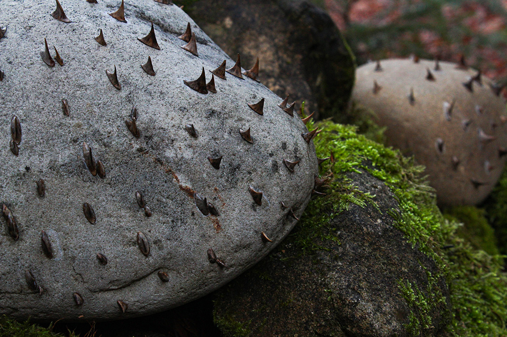
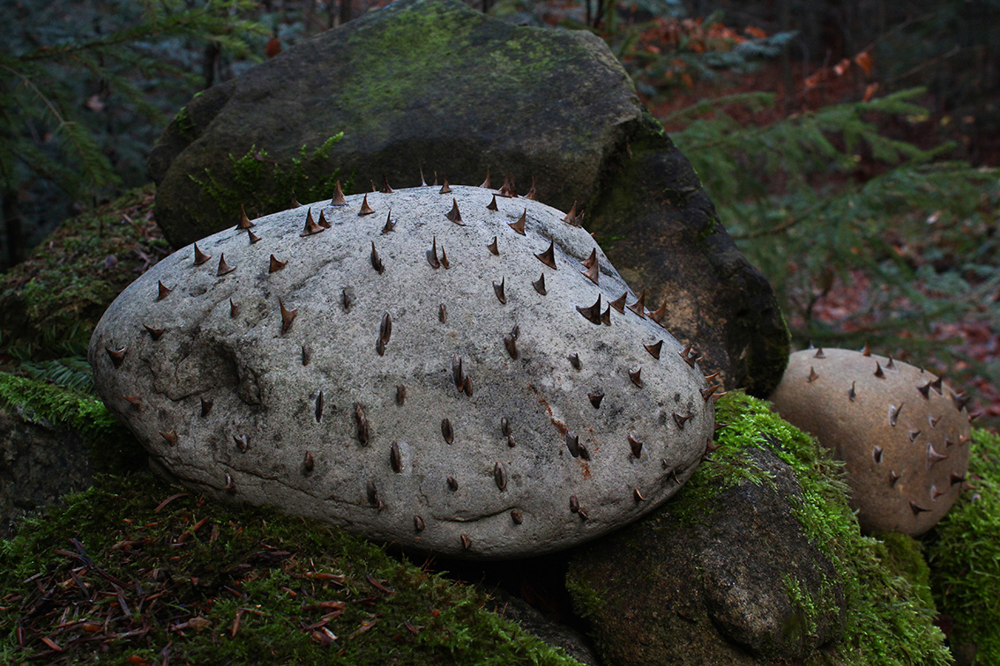
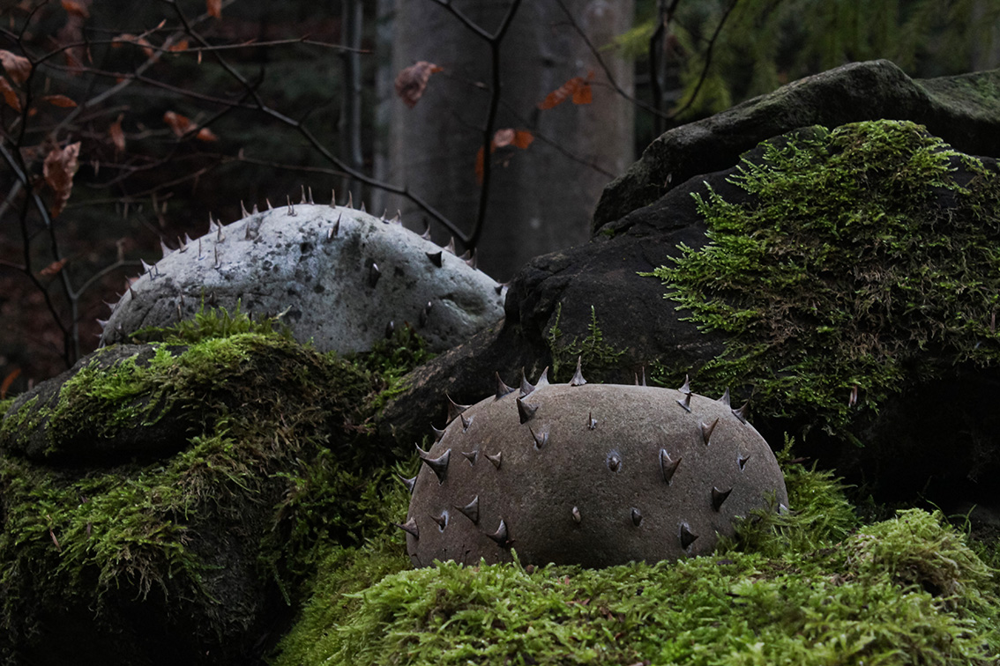
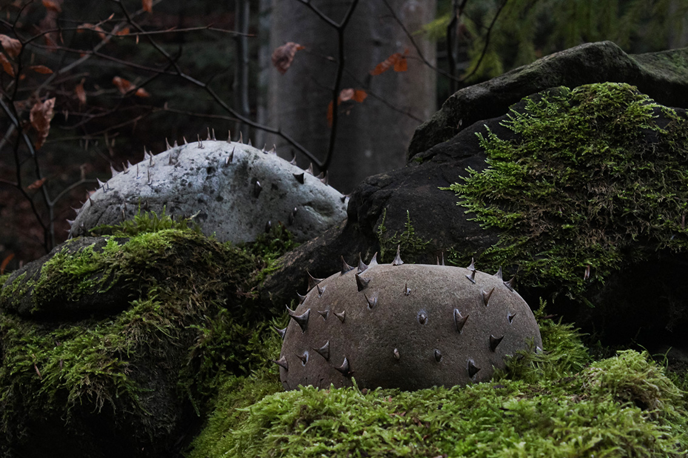

ANXIETY STATE
2022 · as part of the Assortymentna kimnata residence, financed by the Creative Europe program
Concept
With the beginning of the full-scale invasion, there are no places left where we feel safe or calm. Anxiety spreads everywhere, seeping into spaces that once functioned as refuge. Even forests and mountains, our habitual shelters, absorb this tension. What was once protective now carries unease, as if the landscape itself has learned to be alert.
 
